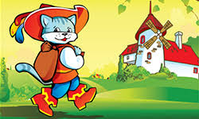

Érase una vez un molinero que tenía tres hijos. El hombre era muy pobre y casi no tenía bienes para dejarles en herencia. Al hijo mayor le legó su viejo molino, al mediano un asno y al pequeño, un gato.
El menor de los chicos se lamentaba ante sus hermanos por lo poco que le había correspondido.
– Vosotros habéis tenido más suerte que yo. El molino muele trigo para hacer panes y tortas y el asno ayuda en las faenas del campo, pero ¿qué puedo hacer yo con un simple gato?
El gato escuchó las quejas de su nuevo amo y acercándose a él le dijo:
– No te equivoques conmigo. Creo que puedo serte más útil de lo que piensas y muy pronto te lo demostraré. Dame una bolsa, un abrigo elegante y unas botas de mi talla, que yo me encargo de todo.
El joven le regaló lo que le pedía porque al fin y al cabo no era mucho y el gato puso en marcha su plan. Como todo minino que se precie, era muy hábil cazando y no le costó mucho esfuerzo atrapar un par de conejos que metió en el saquito. El abrigo nuevo y las botas de terciopelo le proporcionaban un porte distinguido, así que muy seguro de sí mismo se dirigió al palacio real y consiguió ser recibido por el rey.
– Majestad, mi amo el Marqués de Carabás le envía estos conejos – mintió el gato.
– ¡Oh, muchas gracias! – respondió el monarca – Dile a tu dueño que le agradezco mucho este obsequio.
El gato regresó a casa satisfecho y partir de entonces, cada semana acudió al palacio a entregarle presentes al rey de parte del supuesto Marqués de Carabás. Le llevaba un saco de patatas, unas suculentas perdices, flores para embellecer los lujosos salones reales… El rey se sentía halagado con tantas atenciones e intrigado por saber quién era ese Marqués de Carabás que tantos regalos le enviaba mediante su espabilado gato.
Un día, estando el gato con su amo en el bosque, vio que la carroza real pasaba por el camino que bordeaba el río.
– ¡Rápido, rápido! – le dijo el gato al joven – ¡Quítate la ropa, tírate al agua y finge que no sabes nadar y te estás ahogando!
El hijo del molinero no entendía nada pero pensó que no tenía nada que perder y se lanzó al río ¡El agua estaba helada! Mientras tanto, el astuto gato escondió las prendas del chico y cuando la carroza estuvo lo suficientemente cerca, comenzó a gritar.
– ¡Socorro! ¡Socorro! ¡Mi amo el Marqués de Carabás no sabe nadar! ¡Ayúdenme!
El rey mandó parar al cochero y sus criados rescataron al muchacho ¡Era lo menos que podía hacer por ese hombre tan detallista que le había colmado de regalos!
Cuando estuvo a salvo, el gato mintió de nuevo.
– ¡Sus ropas no están! ¡Con toda esta confusión han debido de robarlas unos ladrones!
– No te preocupes – dijo el rey al gato – Le cubriremos con una manta para que no pase frío y ahora mismo envío a mis criados a por ropa digna de un caballero como él.
Dicho y hecho. Los criados le trajeron elegantes prendas de seda y unos cómodos zapatos de piel que al hijo del molinero le hicieron sentirse como un verdadero señor. El gato, con voz pomposa, habló con seguridad una vez más.
– Mi amo y yo quisiéramos agradecerles todo lo que acaban de hacer por nosotros. Por favor, vengan a conocer nuestras tierras y nuestro hogar.
– Será un placer. Mi hija nos acompañará – afirmó el rey señalando a una preciosa muchacha que asomaba su cabeza de rubia cabellera por la ventana de la carroza.
El falso Marqués de Carabás se giró para mirarla. Como era de esperar, se quedó prendado de ella en cuanto la vio, clavando su mirada sobre sus bellos ojos verdes. La joven, ruborizada, le correspondió con una dulce sonrisa que mostraba unos dientes tan blancos como perlas marinas.
– Si le parece bien, mi amo irá con ustedes en el carruaje. Mientras, yo me adelantaré para comprobar que todo esté en orden en nuestras propiedades.
El amo subió a la carroza de manera obediente, dejándose llevar por la inventiva del gato. Mientras, éste echó a correr y llegó a unas ricas y extensas tierras que evidentemente no eran de su dueño, sino de un ogro que vivía en la comarca. Por allí se encontró a unos cuantos campesinos que labraban la tierra. Con cara seria y gesto autoritario les dijo:
– Cuando veáis al rey tenéis que decirle que estos terrenos son del Marqués de Carabás ¿entendido? A cambio os daré una recompensa.
Los campesinos aceptaron y cuando pasó el rey por allí y les preguntó a quién pertenecían esos campos tan bien cuidados, le dijeron que eran de su buen amo el Marqués de Carabás.
El gato, mientras tanto, ya había llegado al castillo. Tenía que conseguir que el ogro desapareciera para que su amo pudiera quedarse como dueño y señor de todo. Llamó a la puerta y se presentó como un viajero de paso que venía a presentarle sus respetos. Se sorprendió de que, a pesar de ser un ogro, tuviera un castillo tan elegante.
– Señor ogro – le dijo el gato – Es conocido en todo el reino que usted tiene poderes. Me han contado que posee la habilidad de convertirse en lo que quiera.
– Has oído bien – contestó el gigante – Ahora verás de lo que soy capaz.
Y como por arte de magia, el ogro se convirtió en un león. El gato se hizo el sorprendido y aplaudió para halagarle.
– ¡Increíble! ¡Nunca había visto nada igual! Me pregunto si es capaz de convertirse usted en un animal pequeño, por ejemplo, un ratoncito.
– ¿Acaso dudas de mis poderes? ¡Observa con atención! – Y el ogro, orgulloso de mostrarle todo lo que podía hacer, se transformó en un ratón.
¡Sí! ¡Lo había conseguido! El ogro ya era una presa fácil para él. De un salto se abalanzó sobre el animalillo y se lo zampó sin que al pobre le diera tiempo ni a pestañear.
Como había planeado, ya no había ogro y el castillo se había quedado sin dueño, así que cuando llamaron a la puerta, el gato salió a recibir a su amo, al rey y a la princesa.
– Sea bienvenido a su casa, señor Marqués de Carabás. Es un honor para nosotros tener aquí a su alteza y a su hermosa hija. Pasen al salón de invitados. La cena está servida – exclamó solemnemente el gato al tiempo que hacía una reverencia.
Todos entraron y disfrutaron de una maravillosa velada a la luz de las velas. Al término, el rey, impresionado por lo educado que era el Marqués de Carabás y deslumbrado por todas sus riquezas y posesiones, dio su consentimiento para que se casara con la princesa.
Y así es como termina la historia del hijo del molinero, que alcanzó la dicha más completa gracias a un simple pero ingenioso gato que en herencia le dejó su padre.
